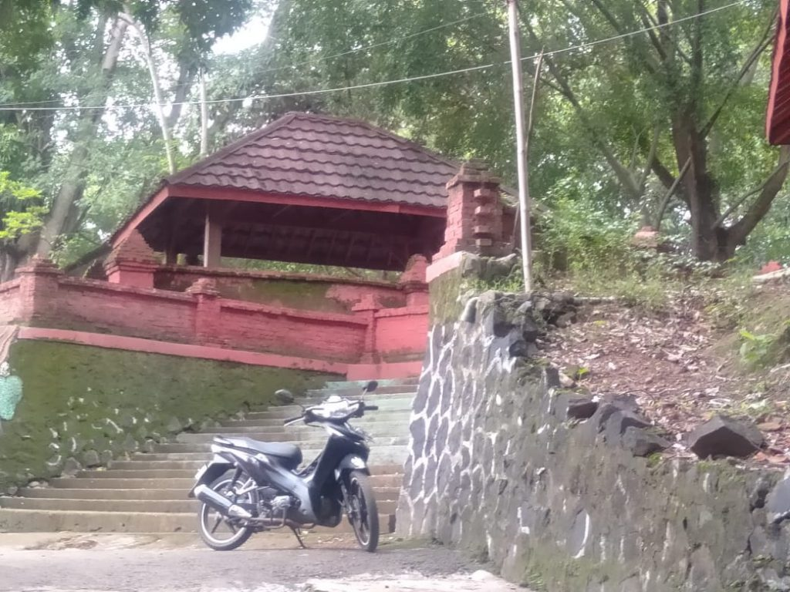

KERAMAT SINDANG PANCURAN MEMILIKI 7 BUAH MATA AIR
Cirebon - Jika berkunjung ke wilayah Cirebon Timur, tepatnya di Sindang Laut,
cobalah singgah di situs keramat Sindang Pancuran. Situs tersebut tidak begitu jauh dari jalan raya, tepatnya di desa Sindang Laut, Kecamatan Lemahabang Kabupaten Cirebon.
Sindang pancuran merupakan mata air yang memliki 7 buah sumber mata air. Tiga diantaranya berada di sekitar situs keramat dan mudah dijumpai. Sedangkan empat lainnya berada jauh. Ketujuh sumber mata air tersebut masih berada dalam satu aliran sungai.

Menurut Said anggota (Laskar Macan Ali) LMA, menyampaikan bahwa salah satu mata air yang biasa digunakan oleh masyarakat adalah mata air yang berada di dekat area pemakaman, di mana di situ terdapat 5 pancuran, dan 2 pancuran yang berada di dekatnya. 5 pancuran tersebut diberi tembok dan atap, yang berfungsi sebagai mencegah benda-benda dari atas yang jatuh ke mata air. pungkasya.
Sedangkan untuk yang satunya, ditembok tertutup. Hanya aliran air saja yang mengalir keluar dan dihubungkan dengan pipa.
Menurut kuncen situs keramat Sindang Pancuran, tembok tersebut dibangun oleh Belanda, yang berfungsi untuk mengalirkan air dari mata air menuju pabrik gula di Sindang Laut. Diperkirakan usianya sama sejak dibangunnya Pabrik Gula Sindang Laut, yakni sekitar 1896.

Ditempat yang sama, Abah Ray (abah Rahman), menceritakan, sumber mata air ini pertama kali ditemukan oleh Pangeran Sela Ganda, di masa pemerintahan Prabu Siliwangi dari Kerajaan Pajajaran. Awalnya, salah satu anak Prabu Siliwangi yang beragama Islam bernama Pangeran Walangsungsang atau Pangeran Sapujagat atau Pangeran Cakrabuana, mendirikan sebuah pesantren bernama Dukuh Awi. Dinamakan tersebut karena pesantren atau pedukuhan tersebut terbuat dari bambu. Dalam bahasa Sunda, awi berarti bambu. yang diiyakan oleh Said.
“Dukuh Awi digunakan sebagai tempat bermusyawarah dan mengajarkan agama Islam,” jelasnya saat ditemui di situs keramat akan Sindang Pancuran, Desa Sindang Laut, Kecamatan Lemahabang Kabupaten Cirebon, Sabtu (10/09/2022).
Terdapat permasalahan di Dukuh Awi, karena di sekitar tempat tersebut tidak ada sumber air. Hingga akhirnya, lokasi Dukuh Awi berpindah-pindah. Kemudian, Pangeran Sapu Jagat meminta kepada salah satu temannya bernama Pangeran Sela Ganda, untuk mencarikan sumber mata air.
Akhirnya, Pangeran Sela Ganda menemukan sumber mata air yang bersih dan jernih di sungai Desa Sindang Laut. Karena airnya terus memancar, Pangeran Sapu Jagad dengan prajuritnya membangun tempat penampungan agar air tidak terbuang sia-sia. Akhirnya Dukuh Awi pun menetap di situ. Kemudian oleh Belanda, mata air tersebut pun diperbesar, ditemboki, dan diberi atap supaya lebih terlindungi dari benda-benda yang masuk ke mata air.

Konon katanya, lanjut Maksudi, air dari Sindang Pancuran ini dipercaya bisa mendatangkan khasiat. Hal tersebut berawal saat salah satu anak Prabu Siliwangi bernama Kian Santang sedang sakit ketika masih kecil. Prabu Siliwangi pun memerintahkan sang kakak, Pangeran Walangsungsang, untuk mengambil air yang ada di Sindang Pancuran.
“Setelah diberi minum air tersebut, Kian Santang akhirnya sembuh,” jelas Said.
Hal tersebutlah yang akhirnya membuat masyarakat sekitar, bahkan dari luar daerah, mendatangi Sindang Pancuran untuk mendapatkan khasiatnya, seperti menyembuhkan penyakit, penjagaan, serta muhabbah atau pengasihan.
“Mitosnya begitu, Sindang Pancuran diyakini oleh warga memiliki beberapa khasiat di antaranya penjagaan, kejayaan, dan pengasihan. Tapi sama warga sekitar biasa digunakan untuk beraktivitas seperti mencuci baju dan minum,” pungkasnya. (ASR)